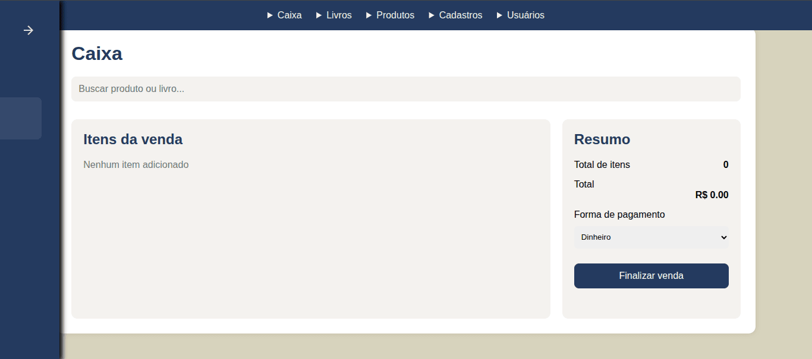
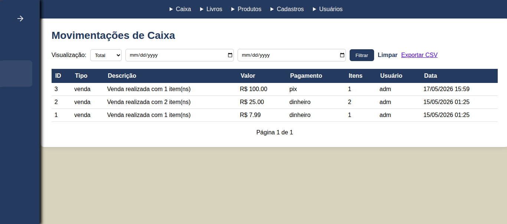

Caixa
VISÃO GERAL
O controle de caixa permite de maneira simples, auxiliar no controle da venda de livros e outros produtos, permitindo realizar a venda de forma rápida.
Esta página reúne manuais rápidos e explicações sobre cada funcionalidade disponível no caixa.
Funções de caixa
Utilize a lista abaixo para acessar rapidamente a documentação da função que deseja.
Caixa
Caminho: Caixa/CaixaToda operação de vendas pode ser realizada pela tela caixa. O usuário pode realizar a busca do produto através da barra de pesquisa superior e inserir os produtos no carrinho para finalizar a venda.

Funções disponíveis:
- Busca de item por nome ou título
- Controle do carrinho do cliente durante a venda
- Soma automática do valor da venda com base nos produtos do carrinho
- Escolha da forma de pagamento
- Registro de venda
Sempre que for realizada uma venda, ela ficará gravada na tela Movimentações de caixa
MOVIMENTAÇÕES DE CAIXA
Caminho: Caixa/ Movimentações de caixaEssa tela tem por função listar todas as movimentações de caixa do sebo com base no filtro selecionado, onde é possível escolher visualizar movimentações de um período específico ou todas as movimentações.

Nesta tela você pode:
- Listar movimentações no caixa, com valor, data, total de itens e usuário que realizou a venda.
- Exportar a movimentação para CSV
DÚVIDAS COMUNS
Um item que está em estoque não está aparecendo na barra de pesquisa do caixa.
Acesse o caminho Livros/ Listar livros, ou Produtos/ Listar produtos e verifique se o item em questão está com saldo acima de 0, ou não possui
Posso editar um livro já cadastrado?
Sim. Basta acessar a listagem de livros e clicar no livro que a tela de edição irá abrir..